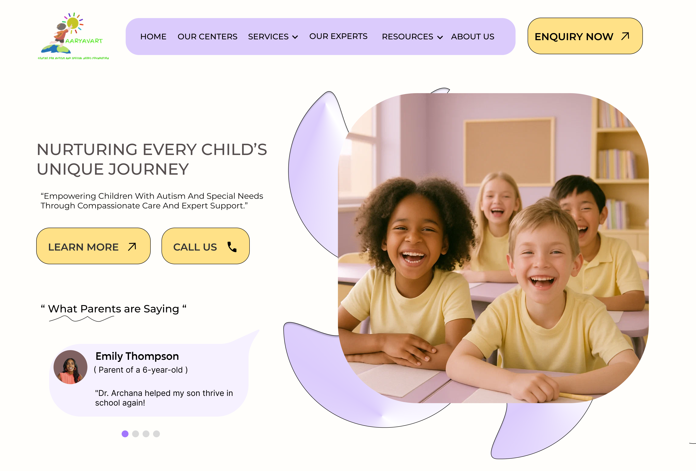
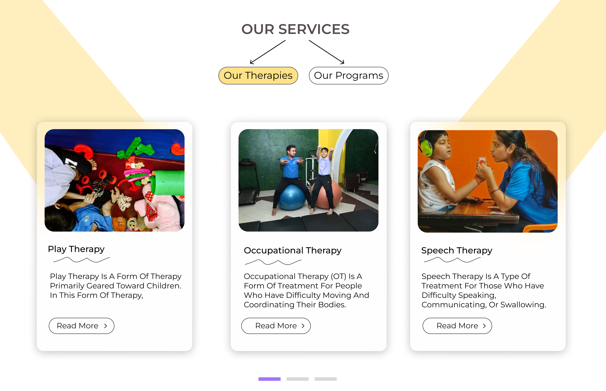

Aaryavart Centre for Autism and Special Needs Foundation
Website Redesign
Accessibility
Branding
Community Impact
Overview
Aaryavart Centre for Autism and Special Needs Foundation is a community-focused organization offering therapy and developmental services to children with diverse needs. This redesign project aims to modernize and simplify their web presence, improving clarity, accessibility, and trust.
Problem Statement
- Outdated design with weak mobile responsiveness
- Poor content structure
- Lack of emotional appeal and clarity of services
- Limited trust-building elements (testimonials, visuals)
Goal of the Redesign
- Create a warm, welcoming, and professional interface
- Clearly highlight services and facilities
- Improve user trust with testimonials and visuals
- Simplify CTAs for appointments or inquiries
- Make the site more accessible to parents and caretakers
Target Audience
- Parents of children with autism or special needs
- Therapists or professionals seeking collaboration
- Donors and supporters of the foundation
Visual Design Choices
| Element | Rationale |
|---|---|
| Soft yellow & purple tones | Emotionally comforting, inclusive, and professional |
| Round shapes & friendly illustrations | To reduce tension and feel child-friendly |
| Modern sans-serif fonts | For clarity and approachability |
| Images of happy children & staff | Build empathy and trust |
Structure of the New Website
- Hero Section: Clear headline about the foundation's mission, warm image with children and caretakers, CTA: "Contact Us" & "Book a Session"
- Testimonials Section: Real quotes from parents, adds human credibility and emotional connection
- Our Services: Occupational Therapy, Speech Therapy, Special Education, Behavioral Therapy. Each card includes image + summary + consistency in design.
- Why Choose Us? Statement section reinforcing trust, designed as a curved section to break the flow gently
- Our Facilities: Cards explaining tools and spaces: Sensory Room, Play Area, Group Sessions, Transportation Assistance
- FAQ Section: Clean accordion format, helps clear doubts without overwhelming the user
- Footer: Location, email, phone, social media links, simplified contact and privacy links
Mobile First Approach
- Content stack rearranged for vertical scrolling
- Clickable elements enlarged
- Collapsible menus for smooth navigation
Accessibility Additions
- High color contrast for readability
- Alt-text and descriptive labels planned
- Buttons clearly separated and color-coded
Challenges Solved
| Challenge | Solution |
|---|---|
| Overwhelming service info | Separated into clean cards with illustrations |
| Lack of emotional connect | Added testimonial block with real parent quotes |
| Confusing navigation | Simplified sections and consistent CTAs |
| Weak brand identity | Used color theory and structured layout to build professionalism |
Tools Used
- Figma for UI Design
- FigJam for sitemap and flow
- Google Fonts for clean typography
- Image assets selected for emotional resonance
Results (Expected Impact)
- Increased parent engagement and bookings
- Better understanding of the therapy ecosystem
- More trust in the center via visuals & testimonials
- Improved SEO due to structured, accessible content
Future Improvements
- Add a blog section for resources and advice
- Parent dashboard for progress updates
- Donation and volunteer pages
- Language toggle for wider accessibility
Low-Fidelity Wireframe
Final Design Screens
Hero

Services

Call to Action
Facilities